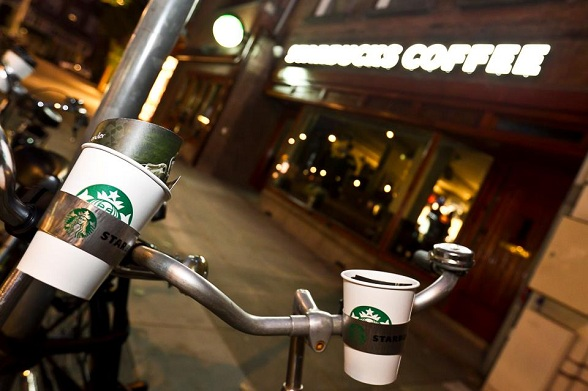

Over ons
Het gebeurt elke week miljoenen keren - een klant krijgt iets te drinken van een barista van Starbucks - maar elke keer is uniek.
Het is maar een kort moment – gewoon een hand die over de toonbank een beker aanreikt aan een andere uitgestoken hand.
Maar er is connectie.
We zorgen dat alles wat we doen in het teken staat van die verbinding – van ons streven naar koffie van de beste kwaliteit ter wereld tot de manier waarop we ons samen met onze klanten en onze omgeving inzetten voor verantwoord zaken doen.
Vanaf het begin, met één vestiging bijna veertig jaar geleden, hebben we overal waar we zijn geweest en bij alles wat we aanraken geprobeerd het wat beter te maken dan we het aantroffen.